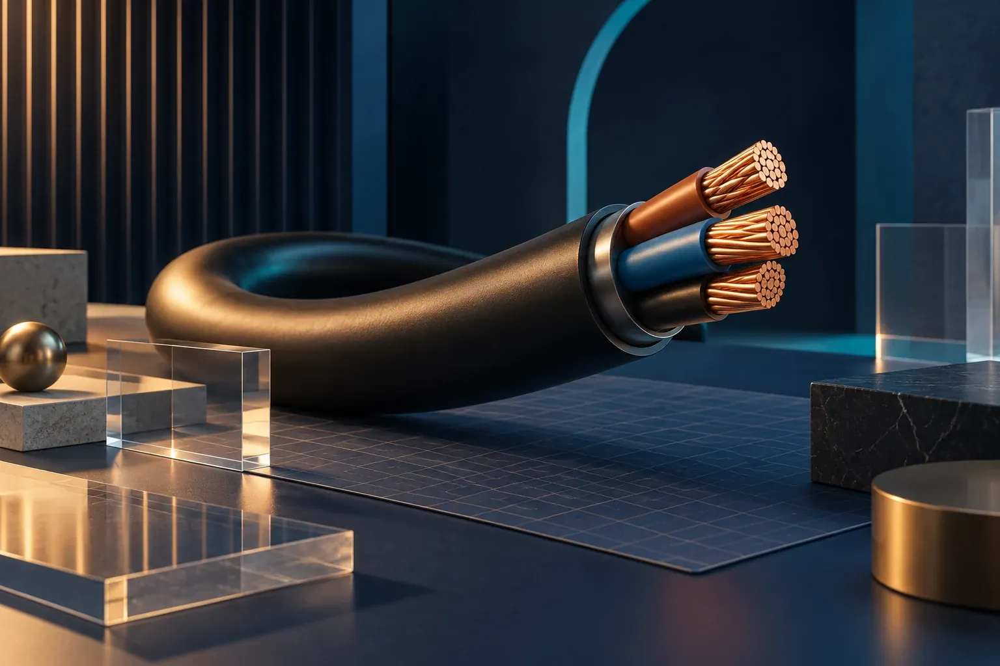

رقبا چه میکنند؟
۱۰ سایت مرتبط، قوتها و خلأهای مشاهدهشده، منابع و تصویر صفحه اصلی.
رقباسئو و طراحی
گزارش رقبا ←این گزارش نشان میدهد یافتههای رقبا و راهبرد سئو چگونه به صفحه اصلی، صفحه مدل و مسیر استعلام خریدار تبدیل میشوند. نمونه تعاملی پایین صفحه، طرح سایت مشتری است.

این صفحه طرح تجربه سایت مشتری و نمونه تعاملی آن را نشان میدهد. نمونه نمایشی است؛ برند، موجودی، قیمت و مدارک نهایی باید از داده تأییدشده مشتری بیایند.
صفحه اصلی، درگاه ورود است؛ این چهار گزارش از شواهد بازار به نمونه رابط سایت مشتری میرسند.
۱۰ سایت مرتبط، قوتها و خلأهای مشاهدهشده، منابع و تصویر صفحه اصلی.
صفحه مدل، معماری سئو، اولویتهای نسخه اول و فرایند استعلام.
وردپرس و توسعه اختصاصی، مراحل، ریسکها و معیارهای انتخاب.
مسیر خریدار، اجزای صفحه و نمونه تعاملی سایت مدلمحور.
کدام مدلها، محتوا و مسیرهای استعلام در بازار دیده میشوند؟
کجا میتوان اطلاعات فنی معتبرتر و مسیر کوتاهتری ساخت؟
جستوجوی پارتنامبر، مقایسه و صفحه مرجع هر مدل.
کد، مقدار، مقصد و موعد در یک درخواست چندقلمی.
در نسخه عملیاتی، ورودی اول جستوجوی کد و مدل است؛ اگر خریدار کد ندارد، خانواده و فیلترهای فنی به او کمک میکنند.
این صفحه باید هم برای خریدار فنی و هم برای جستوجوی کد دقیق پاسخ کامل داشته باشد.
سرمهای عمیق، فیروزهای برای پیوند و مسی برای تأکید؛ اعداد و یافتهها از متن جدا دیده میشوند.
خلاصه، شاخص، جدول، کارت شواهد و فهرست بخشها خواندن گزارش طولانی را آسان میکنند.
لینک منبع و تصویر صفحه اصلی کنار تحلیل رقیب میآید؛ محدودیت داده هم آشکار میماند.
این نمونه یک مسیر طراحی برای سایت عملیاتی مشتری است. مدلها و برندهای داخل آن نمایشیاند.